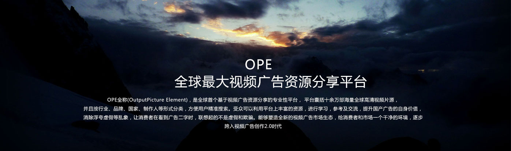
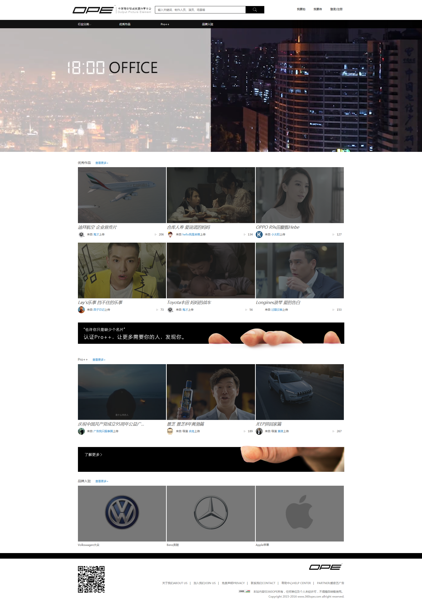
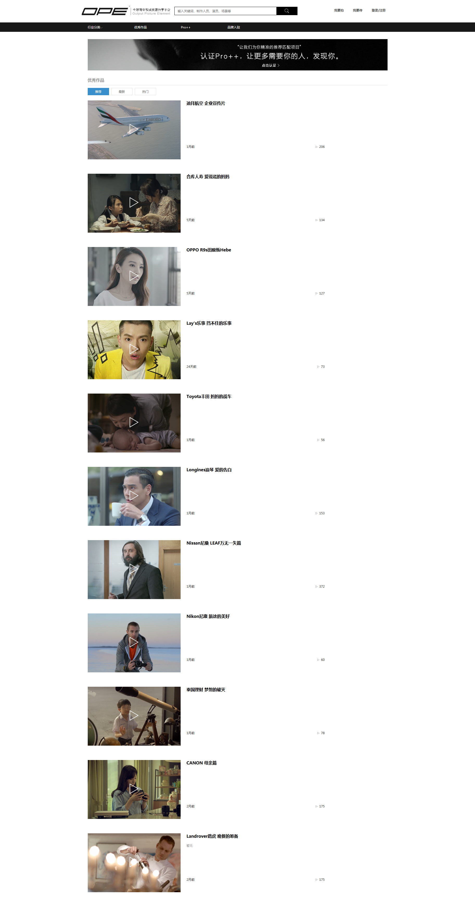
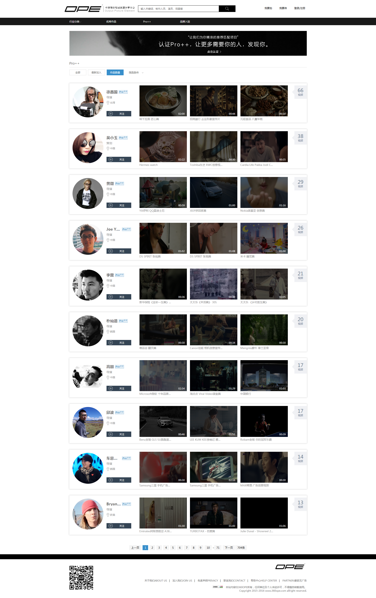
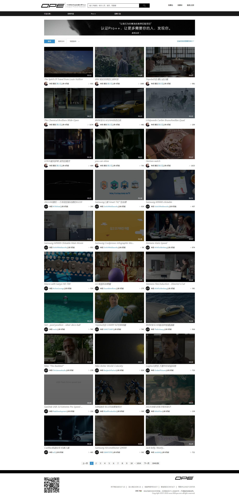

品牌广告主 对于品牌广告主来说， OPE的上线在一定程度上扩展了营销方式，不单单可以进行自属品牌的视频广告推介，还可以更大限度的进行同行业竞品观察，为自身品牌市场提供良好助力作用。 广告从业者 鉴于中国广告行业相对封闭的创意环境，OPE的上线直接解决了广告从业者，尤其广告创意人员素材参考少，优秀作品鉴赏寻找困难的难题，有效的提升创意制作工作效率。 视频广告制作团队 OPE作为开放式的平台，推出pro++免费服务，为广告制作团队提供一个作品对外展示的家，制作团队及公司可以在平台内通过邮件，微信，微博等第三方平台分享给他人，并且可以选择性留取自己的联系方式。为自己争取更过的项目机会。 广告专业学生 OPE致力于促进广告行业的常态良性发展，其垂直的平台属性，海量优秀的高清视频广告为在校修习广告类专业学生提供足够专业、全面的广告思维逻辑养成、优秀作品鉴赏品鉴能力。
案例部分图片展示



